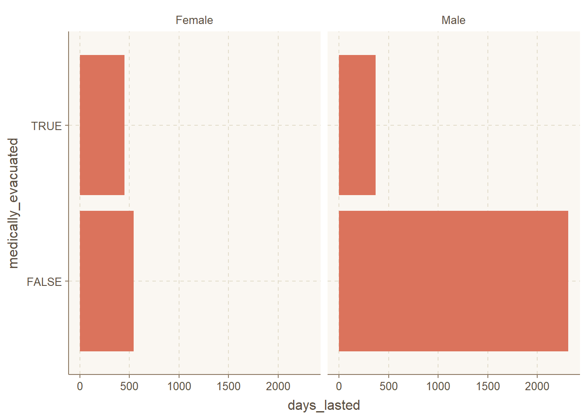

Tidy Tuesday is a weekly social data project in the R programming language community, created by R for Data Science authors Hadley Wickham and Mara Averick. The project involves posting a new dataset on the Tidy Tuesday GitHub repository every Tuesday, along with a set of questions or challenges related to the data. The aim of Tidy Tuesday is to provide a fun and collaborative way for R users to improve their data analysis and visualization skills, and to share their work with the broader community.
What data I decided to use for one of the Tidy Tuesday?
The Tidy Tuesday I used was the Alone data set, which contains information about the participants and their progress in the Alone TV series. The data set includes 8 seasons of the show, with each season consisting of a different set of contestants who are dropped off in a remote wilderness location and must survive alone. The data set includes information such as the contestant’s name, age, gender, occupation, location, survival equipment, and duration of their stay. The project provided a valuable opportunity for me to practice their data wrangling, visualization, and analysis skills using real-world data in a fun and engaging way.
Survivalist and Wildlife Therapist/Natural Healing
Dustin Feher
Male
1
Family / personal
8
5
FALSE
Carpenter
Brant McGee
Male
1
Medical / health
6
6
FALSE
US Army Guard and Former US Coast Guard
Wayne Russell
Male
1
Family / personal
4
7
FALSE
Research Assistant
Joe Robinet
Male
1
Loss of inventory
4
8
FALSE
Carpenter
Chris Weatherman
Male
1
Family / personal
1
9
FALSE
Author
Josh Chavez
Male
1
Family / personal
0
10
FALSE
Law Enforcement
Data exploration.
While exploring the quantifing aspect of the data set I first noticed there were almost 3 times as much gendered males then female. Even though there is an unbalance in gender I was able to see that on average that gendered females on average lasted longer (in days) then gendered males.
Further exploring, I decided to work survival rates between gendered females and males by either medically evacuated, left for medical health, personal, or family reasons. I found minor significants in the survival rate of (….. ……)
Lastly, since was not satisfied with my exploration I thought that I would drop gender,age,and where contestant lived and decided to bin them by categorized the professions into white-collar, outdoor survivalists, blue-collar tradesmen, armed forces, and others, mostly entrepreneurs. As I know this cause some bias, and I made sure to do the best of my abilities I could, with the research and global knowledge I have.
On Average Days Lasted
39 days is the average days lasted on the show alone
Check out the Code!
#survivalists%>% #summarise(num_patients = n(),)#table(survivalists$gender)#table(survivalists$age)agegen<-lm(days_lasted~gender ,survivalists)#summary(agegen)alone<- survivalists%>%mutate(gender =ifelse(gender =="Female",1,0))gen_avg<-survivalists%>%select(gender, days_lasted)%>%group_by(gender)%>%summarise(med_last =median(days_lasted))#gen_avgggplot(gen_avg,aes(gender,med_last,fill=gender))+geom_bar(stat="identity") +theme_minimal()+ylab("Median of days someone last")+labs(title="The difference in of females vs. males",subtitle ="How many days they lasted in the show Alone",x=" male and females lasted in days")

Conclusion
After exploring the Alone Tidy Tuesday data set, I conducted an analysis to determine the survival rate of male and female participants. I examined the reasons why contestants were either medically evacuated or left for medical health or personal family reasons, and checked if there was any significant difference in the arrival rate between males and females. However, I did not find any interesting findings related to survival rate.
Therefore, I decided to investigate the professions of the contestants and see if there were any significant differences in the survival rate among different professions. I categorized the professions into white-collar, outdoor survivalists, blue-collar tradesmen, armed forces, and others, mostly entrepreneurs. I found that outdoor survivalists and blue-collar tradesmen were more likely to survive longer than armed forces and white-collar workers. This was an interesting finding as it confirmed some assumptions that people might have about survival skills, and it was exciting to have an analysis that could prove these assumptions.
During this data exploration, I was aware of the potential biases that could arise from categorizing the professions, so I tried to make sure that I did it in the most ethical way possible. When there were things that I didn’t know, I put them into the “Other” category to avoid any unintentional biases. Overall, this project provided a great opportunity for me to use my data wrangling, visualization, and analysis skills, and I learned a lot from this experience.